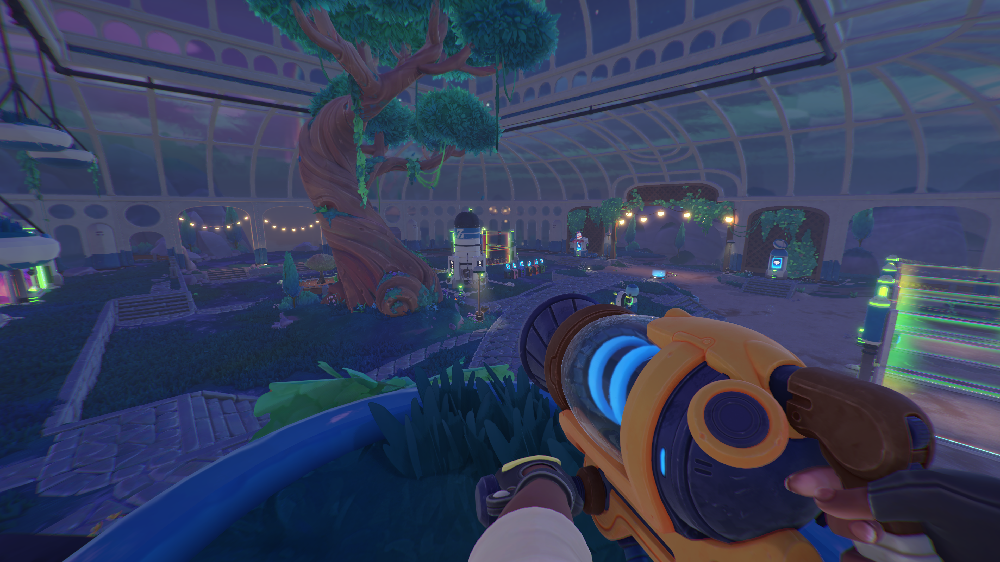
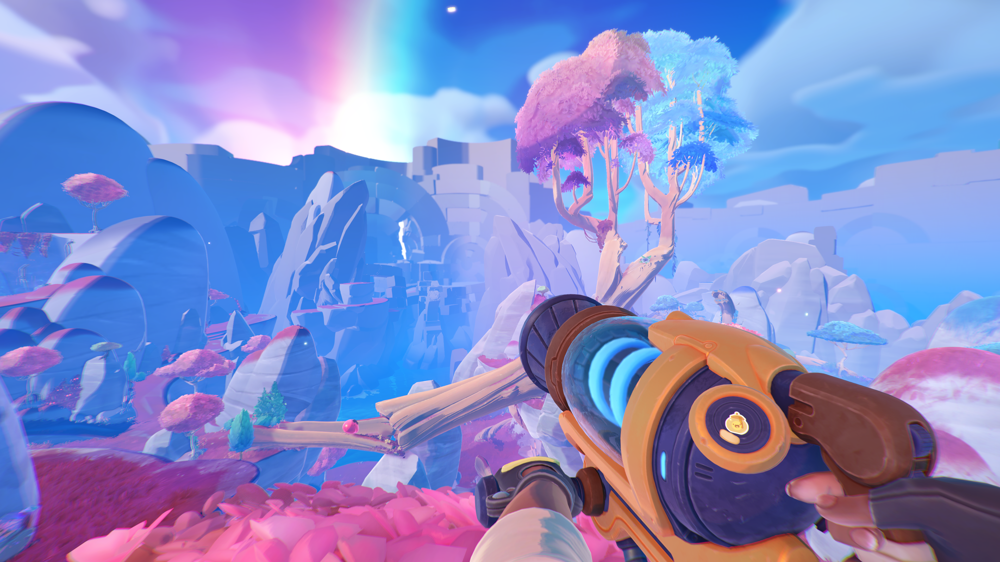
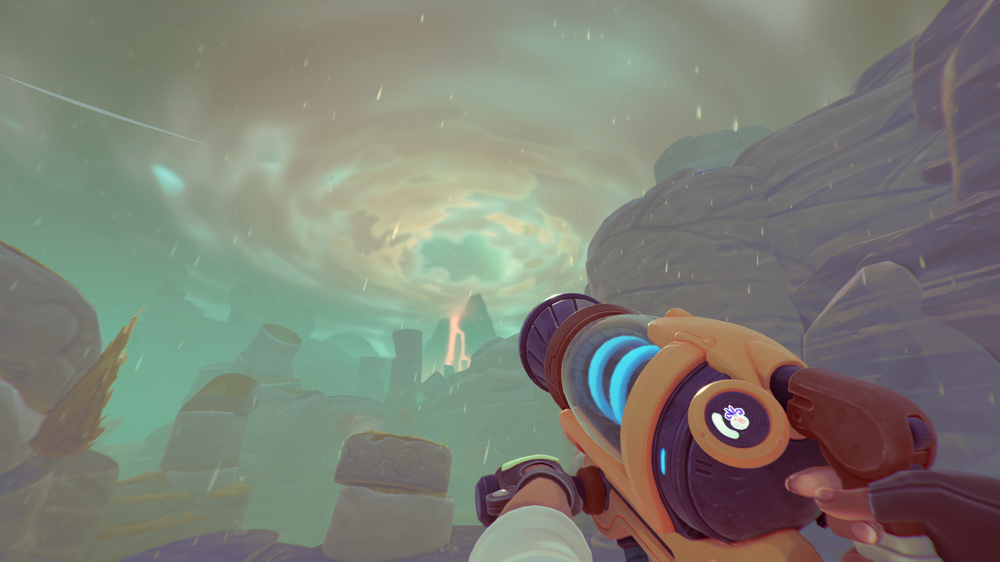

Wiki de Slime Rancher 2
Artigos e História
Explore o rico mundo de Slime Rancher 2. Aprenda sobre novos slimes, melhorias do rancho, elementos da história e locais na Ilha Arco-Íris.
Galeria de Imagens
Navegue por artes conceituais, capturas de tela do jogo e artes de fãs da Ilha Arco-Íris.



Guias de Estratégia
Dicas e tutoriais para te ajudar a ter sucesso na Ilha Arco-Íris.